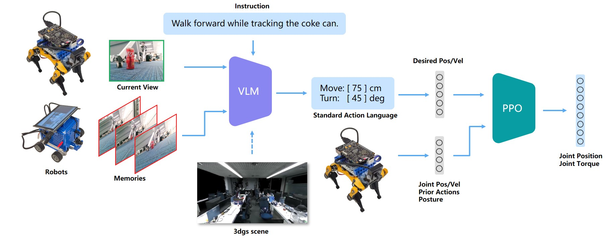

跨形态机器人的语言-视觉分层强化学习控制架构

项目地址：
VLM: https://gitee.com/feng-xie-yi/vlm_car
RL: https://gitee.com/momaoto/rl-locomotion-mujoco
项目信息
选题思路
现有跨形态机器人控制需为不同硬件单独设计策略，开发成本高且泛化性差。本课题尝试使用语言指令统一接口，用户用自然语言指挥不同形态机器人完成同一任务，通过分层强化学习框架，高层视觉语言模型（VLM）解析任务生成中间指令，再通过低层强化学习策略适配不同形态的底层动作，通过仿真器快速训练跨形态通用策略，最后部署到真机运行。
现有跨形态机器人（如四足、轮式、人形）控制通常需为不同硬件单独设计策略，开发成本高且泛化性差。本课题提出一种基于语言-视觉分层强化学习的跨形态机器人通用控制架构，旨在通过自然语言指令统一接口，实现多形态机器人的任务适配与高效控制。具体而言，高层视觉语言模型（VLM）解析用户指令并生成标准化中间指令（如“左转30度”），低层强化学习策略则根据机器人形态参数化编码，将中间指令映射为具体形态的底层动作（如四足步态或轮式转向）。通过NVIDIA Isaac Sim仿真器快速训练跨形态通用策略，并结合X5 RDK人形机器人及四足机器人进行真机验证，本课题展示了同一语言指令在不同形态机器人上的高效执行能力。实验结果表明，该框架在动态避障、复杂地形适应及任务重规划等方面具有显著优势，为跨形态机器人控制提供了一种低成本、高泛化的解决方案。
拟采用技术方案
拟采用分层强化学习架构，使用高层VLM完成从图像与自然语言输入到标准化中间指令的输出的转换，再使用底层RL策略完成最终动作序列的生成。采用mujoco+多形态机器人模型进行仿真验证，最终尝试跨机器人平台的真机部署。
预期展示效果
仿真环境下完成同一指令“绕过障碍物进入右侧房间”驱动四足/轮式机器人进行不同路径规划与动作执行，真机使用自己搭建轮式小车+Petoi Bittle进行展示。后续增加更多语言交互。
X5 RDK用法
整合X5的RGB摄像头、IMU数据，输入高层VLM和低层策略，通过ROS2桥接，接收低层策略输出的关节目标角度，转换为电机控制指令。
仿真器验证内容
训练四足策略后，冻结高层VLM，仅微调低层进行人形机器人与轮式机器人的适配。仿真环境中随机生成障碍物、地形起伏、光照变化，验证策略鲁棒性，同时对比端到端的RL策略的效率与所需算力差异。
真机演示内容
轮式机器人执行“沿走廊前进，在第二个门口右转”，足式机器人完成“避开地面杂物，将指定物品放置到指定位置”。
项目分工
| 数据与算法 | 建模与仿真 | 实机部署 |
|---|---|---|
| 仿真与实机数据采集（Hao） | 仿真场景库（Shay） | X5 RDK部署（Hao） |
| VLM的部署与微调（Shay） | 训练代码（Momaoto） | 实机避障调试（Momaoto） |
| 动作Policy设计与优化（Momaoto） | 机器人建模（Shay） | 跨形态迁移-实机（Hao） |
| 跨形态迁移-仿真（Momaoto） |
项目预算
一台用于强化训练的工程机（或云服务器算力支持），3D打印，舵机升级电机（待定）
项目进度与计划
仿真方面目前已完成仿真环境的搭建与模型构建，后续会注重数据获取、强化训练与真机部署。
方案验证
高层VLM
目标：完成自然语言到中间动作指令的转化，在简单任务（如移动）上不依赖机器人特定形态。
使用VLM完成Navigation任务，实则更接近VLA而不是VLN，前者更关注场景内容理解与交互，后者则专注于路径规划。
采用开源VLM模型微调。
- openVLA：直接输出端到端数据，依赖特定形态，不适用
- LLaVA：本地部署7B模型，对空间感知太差，且运行速度达不到要求（约1item/min）
- Qwen-72B：直接暴力增加参数数量，缺点是无法本地部署，优点是在特定场景效果较好，不需要微调即可进行一定程度的空间感知：
对Qwen-72B进行数据采集并微调：前后手动拍摄了80+场景照片与对应描述prompt，使用官方api进行微调，可惜微调后的模型部署太贵（160r/h），最终放弃。
转变方案：不要求VLM实现精确的位置估计（尤其是不使用深度相机的情况下），而是粗略判断距离，输出下一步的任务指令。这样原生的Qwen-72B就可以实现了。
低层PPO
目标：完成中间动作指令到机器人关节角度与力矩的转化，可能的情况下实现这部分的跨形态（未验证，需要解决变长输出的问题）。
RL主要针对四足机器人，实现一个基于Stable-Baselines3的mujoco仿真环境进行训练。基本要求是保持平稳的情况下直走、转弯，考虑到VLM频率很低（1item/s），后续需要加一个速度的跟踪用来实时避障，这部分也由RL实现。